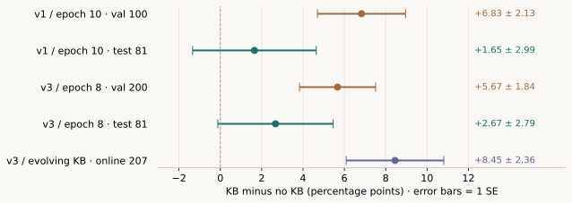

让知识库帮助强模型：KB 科学循环阶段登记
让模型从解题和实验中积累知识，纠正强模型的判断，并逐步整理出训练科学。当前已有正向效用信号；冻结知识库在充分独立测试上的稳定显著收益，仍需更大的验证。
目前可以说：KB 对 sol 的决策已经显示正向作用，值得继续长期积累。
仍待确认：把同一个最终 KB 冻结后，它在新的、足够大的独立测试上能带来多少收益。
v3 第 8 轮 · val 200
参与快照选择同一 KB · test 81
样本小，有历史污染边界动态 KB · 训练流 207
随轮次变化的在线对照所有收益相对同题无 KB；± 为题级配对差值的 1 个标准误（SE），并非 95% 置信区间。重复采样没有增加独立题目的数量。
01 / 把几类收益分别登记
这些结果全部由 gpt-6.1-sol 解题。选择题是 0/1 分；五候选排序按逆序对数给部分分。因此下表记录的是平均 benchmark 得分，不是统一的正确率。kb_0008 等名称只有结合 run 才能唯一定位。
| 实验 / KB | 评测类别 | 题数 × 每题采样 | 平均得分 | 相对无 KB |
|---|---|---|---|---|
v1 · kb_0010 | 反复使用的 val | 100 × 4 | 0.6550 | +6.83 ±2.13pt |
v1 · kb_0010 | 固定 test | 81 × 3 | 0.6286 | +1.65 ±2.99pt |
v1 · kb_0010 | 排除 6 道旧语料重叠题 | 75 × 3 | 0.6122 | +2.22 ±3.07pt |
v1 · kb_0013 | 固定 test | 81 × 3 | 0.6132 | +0.10 ±2.76pt |
v3 · kb_0008 | val | 200 × 2 | 0.6600 | +5.67 ±1.84pt |
v3 · kb_0008 | 固定 test | 81 × 2 | 0.6389 | +2.67 ±2.79pt |
| v3 · 随轮次变化的 KB | 训练流，当前题更新前对照 | 207 × 1/组 | — | +8.45 ±2.36pt |

v3 第 8 轮比其起点 KB 高 3.38 ±1.18pt，通过当时的严格把关。28 条 claim，共 17,863 个正文字符。第 9 轮候选相对它为 −3.31 ±1.33pt，被拒收。最新可核验的已采纳 v3 快照仍是第 8 轮。
训练流 +8.45pt 是另一个有价值的信号：每道新题在用本题答案更新 KB 之前，用当前 KB 和无 KB 各解一次。但 KB 随轮次变化，题源比例也不同。这支持持续积累的在线效用，不能直接替代一个冻结最终快照的泛化成绩。
02 / 从短把关转向长期生长
100 题的小幅得分变化不适合指导每轮知识增删。频繁择优会追逐噪声；一轮尚未形成用途的事实，也可能在后续积累和整理后才有价值。当前 v4 因而采用“先集邮，后整理”的节奏，按多个轮次形成的整体收益审查 KB。
积累有范围的事实
普通轮次记录具体的比较、条件、计数和效应量。机理可选，取消硬字数预算，不要求提前压缩。
每 5 轮主动实验与整理
把事实聚类，再研究边界与翻转。研究调用上限由 2 增至 6；能够解释这一簇观测后，再整理为机理和相图。
宏观检查整体收益
每 5 轮评测 val 200 与固定 test 81，各 3 次采样。test 只作读数；根据 val 审查成长轨迹。
v4 从 v3 第 8 轮 KB 出发，导入 627 条此前的训练记录，计划 15 轮。已有实验工具可把相同候选配置移到同族的其他数据集，观察数据属性如何翻转结论。当前尚无已完成的 v4 宏观检查点，不登记预测收益。
降低选择频率不会自动消除选择偏差。实现按显著退步事件累积审查计数；旧实现并未在所有持平分支清零，所以本页不将其写为“严格连续两次退步”。
为什么暂时不强制压缩
15k 字预算下，v3 两个压缩候选相对起点分别为 −2.38±1.69pt、−2.91±1.57pt。可能的原因包括丢失阈值与条件，以及关键词检索变化。两次负结果不足以把原因唯一归为压缩。
为什么早期不要求机理齐全
单独的 kb_explain 调用率约 1–4%。这说明显式解释字段访问少；它不证明机理无用。先收集观测，再用主动实验区分解释，更符合当前证据密度。
03 / 已积累的科学线索
实验库起始约 11,200 个已测候选配置，通常各有 10 个训练 seed。到 v3 第 8 轮的保存快照，运行实验表已有 1,529 行。行数含继承、配置和可能的缓存结果，不等于独立新实验数。以下是值得继续复现的、有条件的经验结果。
GRU 和 transformer 的比较取决于相对宽度
同优化器的保存 lab 对比中，GRU 对宽度 128 的 transformer 只赢 1/14；GRU64 对 transformer32 赢 10/11。旧“GRU 几乎总赢”的说法混入宽度差，不能作为普遍机制。
宽深回归网络需要学习位移上限
在宽度 ≥128、深度 ≥4 的同模型单变量回归对比中，高 Δ≥0.9 对较低 Δ 只赢 1/9，median loss ratio 为 3.4。偏好的 Δ≈0.1–0.5 仍需保留对手欠训练的例外。
归一化和激活的优先级会随预算变化
两个目标上的受控比较：3 层网络的无 LN LeakyReLU 对 SiLU+LN 在 Δ≈0.077 时赢 0/2，在 Δ≈0.77 和 3.1 时各赢 2/2。它定位了有限范围的翻转，尚未建立跨目标通用阈值。
这里的 Δ 通常取 lr×steps，Adagrad 取 2lr√steps，SGD 另做梯度和动量校正。它是组织观测的训练位移代理，不能当成已直接测得的普遍因果变量。机制字段应保留可反驳预测及其适用域。
04 / 要保留的证据边界
- val 和 test 的差异提示收益可能被高估。v1 的 +6.83pt val 收益，在固定 test 上是 +1.65pt。来源可能包含选择偏差、题型差异和有限采样；不能精确归因全部差距为“挑噪声”。
- test 不能再称完全未见。旧回测 corpus 与 15 道 val、6 道 test 的 arch170 题重叠。过滤为 469 题防止新回测再次看到它们；继承 KB 已吸收的信息仍无法抹除。v3 的 75 题净子集读数待重算。
- 固定 test 已多次查看。它仍是区别于 val 的读数，但本项目已依据这些结果调整实验方向。之后的确证应使用重新冻结、更大的独立评测集合。
- 误差条是描述性 SE。它未校正快照选择，也未按数据集 group 聚类；题级配对有用，但不能用“超过几倍 SE”自动得出整体研究显著性。
- 错误方向表不等于 calibration。偏向更大 lr、宽度或较少 LN 的错选，可以指向值得验证的纠偏事实；尚无置信概率、Brier score 或可靠性曲线，不能断言概率校准失败。
- 诊断未证明“sol 已会所有知识”。直接查原始实验库和小预测器的收益较小，也可能来自检索、数据属性缺失、分布或模型限制。需要更精确的比较和主动实验继续判断。
05 / 运行现状与下一次登记
| 运行 | 本次能核验的状态 | 下一步可登记的证据 |
|---|---|---|
soa_v3 | 第 9 轮已拒收；约 16:30 检查时主进程在，活动总结者为第 10 轮。 | 第 10 轮完整摘要、把关与快照。 |
soa_v4 | 主进程在；最近监控有多次上游 quota 403，尚无完成的宏观检查点。 | 总结正常完成及第 5 轮宏观检查结果。 |
进程存在不能证明正在成功推进。原实验目录在本次发布会话中不可读，因此没有把后续未核验的完成数写入结果。当前的关键工作是确保 curation 产物完整，持续收集，补上净测试和概率校准读数，再用新的大样本观察宏观收益。